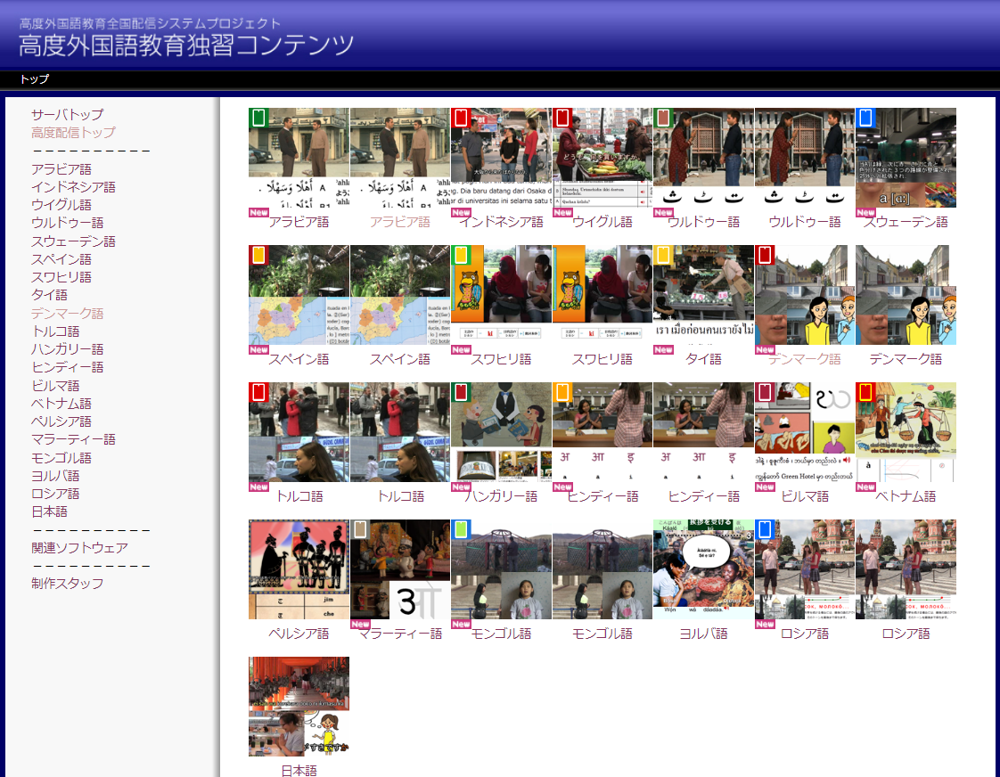
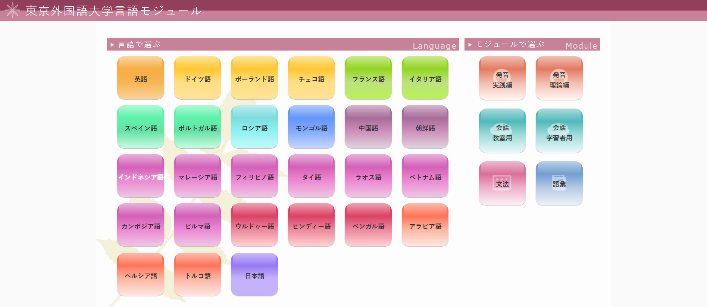
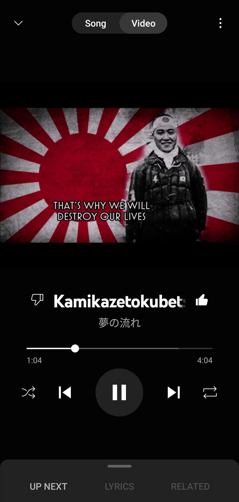
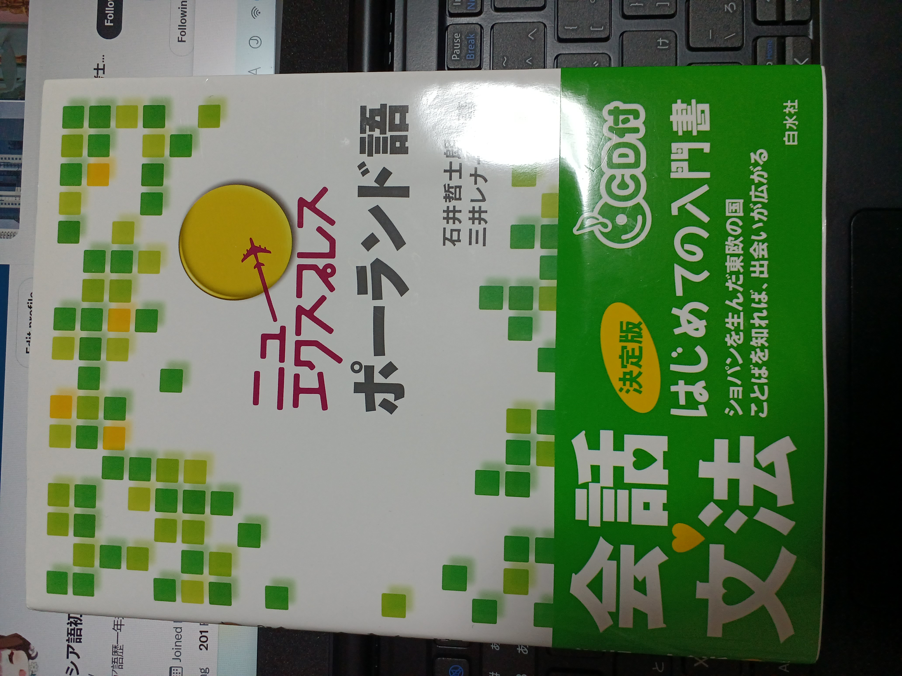

6専門外ですが、ケマルの政教分離政策により現代トルコ語にはアラビア語由来の語彙や文字がありません。現代のジェンダー問題に関する文字狩りに似てると思っています。本質的には、古典も含めてより多くの表現を学んだ上で、状況に応じて適切に使えるようにしておくのが重要だと信じています。
既出
あるDJ「同じ英語の曲でも、ジャマイカと日本では盛り上がる曲・タイミングが違う。向こうの人は歌詞の中身も含めて盛り上がるが、日本人は好きな旋律で盛り上がる。私はそれに気をつけている。」僕が好きなJ-popを外国人に勧めても気にいるとは限らない。僕も、海外の軍歌等も意味が分からずとも言語の響きが好きだったりする。
popより国家,軍歌,愛国歌,民族音楽,先住民音楽などを聴くという奇癖が僕にはあるのですが、意味は分からずとも響きが好きだという理由で好きになる曲が多いです。さらに、そこからその言語に何となく興味がわいたりすることもしばしばあります。外国語学習のきっかけは自分の好きなことであるのが理想ですよね～
言語学習は様々な学術分野に関係が深い。文学や古典は歴史言語学の研究対象であるので言うまでもない。数式や音楽記号、プログラミングはある側面を切り取れば言語活動に他ならない。また、言語学では一種の論理学、解剖学、音響学、統計を扱う。特に線形性などをは数学を使った類推で理解することがある。
言語学は様々な学術分野に関係が深い。文学や古典は歴史言語学の研究対象であるので言うまでもない。数式や音楽記号、プログラミングはある側面を切り取れば言語活動に他ならない。また、言語学では一種の数学、論理学、音響学、統計を扱う。特に線形性などをは数学を使った類推で理解することがある。
語学に正解は無いと思うが、「スぺ語ロシア語初心者」としてスラブ語派・ラテン語派(特にスぺ語とイタリア語)を初歩から並行するのはお勧めしない。片方が堪能だともう一方を「外国語」または「方言」としてはっきり分けて学べる(本来言語に「境界」などないのだが)。しかし、僕はある時モンゴル語を覗くとキリル文字でも発音が微妙に違い、またある時イタリア語を嚙ると代名詞がスペ語より複雑で混乱した。語学は、単に文字の同一や、系統の近さで選べばいい訳でもないようだ。我ながらスペ語とロシア語はお互いの距離が絶妙で、かなり優秀なコンビだと思う。
そもそも言語自体には「境界」を作ることは不可能なのだ。例えば沖縄弁と標準語(江戸弁と呼びたい)は便宜上同じ日本語だとされるが、Wikiの文献(出典から、一定の信憑性があると思われる記事)
良くYouTubeで、外国人とオンラインで話して下に字幕つけた動画をアップする方々がいる。本当に個人的なド偏見だが、外国人と話が通じている自分に酔いたいという側面が少しは絶対ある
梅田スカイビルへ訪問。空中庭園の入り口には種々の言語で各々の名文が書かれていた。また、展望台には世界各地の構想建築が紹介されており、どれも興味深かった。人類は昔から高い所が好きだったようだ。またそれは庶民が見上げて畏れを覚え、権力者は上から俯瞰して支配欲を強めたのだろう。あるいは信仰の対象・宗教的建築が高層なのは天に近かったり登った際に非日常感があって神聖さを感じるからなのかもしれない。実際、山岳信仰はどの宗教でも行われている。
梅田スカイビル。展望台に世界各地の高層建築の紹介。人類は昔から高い所が好きだったようだ。庶民は見上げて畏れを覚え、権力者は見下ろして満足しただろう。天への近さ、登った際の非日常感による神聖さからか、宗教建造物も高層なものが多く、山岳信仰はどの宗教にもある。(一部画像ネットより)
梅田スカイビルに行った際、建築へ強烈な興味を抱いた。文系の要素が多いし。
【警告】ロシア語を学ぶ人々へ
我々ロシア語学徒はキリル文字を扱えることに一定の誇りを感じているが、モンゴルは同じキリル文字でも発音が異なる。新しい文字まで追加されている。ウクライナ語にも文字が追加されている。だから文字が同じだからと言ってなめてかかってはいけない。むしろ文字を全く知らない系統の言語をやったほうが知識の幅も広がるし混乱もしないしお勧め。
言語学的根拠はないが、ふと考えたのは、「助動詞＋原型」はインドヨーロッパ語族の共通点なのではないか。can do may do
ロシア語を今学んでることに特に政治的意味はありません。受験の際、大阪に『ゼロからスタートロシア語』を持って行き楽しみにしていました。しかし前日(2/24)爆撃が起きて、人目が憚られ帰りの新幹線で何もできなかった悲しい記憶がその証拠です。
YouTubeのコメントに「日本語のラップってダサくね？」とあった。恐らくUSラップを聴いたあとに日本語を聴いたらクドく感じたのだろう。外国語は中身が何でも格好良く聴こえる。そして語学を進めていく中で、外国語として日本語を聴いてみると何とも不思議な気持ちになることもある。
YouTubeのコメに「日本語ラップってダサくね？」とあった。USラップを聴いたあとに日本語を聴いたらクドく感じたのだろう。外国語は中身が何でも格好良く聴こえる。それは学習が進んでも変わらない気がする。逆に外国語として日本語を聴くと不思議な気持ちになることがある。
YouTubeのコメに「日本語ラップってダサくね？」とあった。USラップを聴いた後に日本語を聴いたらクドく感じたのなら、それは少し共感する。外国語は中身が何であろうと格好良く聴こえる。それは学習が進んでも変わらない気がする。世界では昔から多くの文人が母語を捨てる様にある言語に熱中しているのはそんな魅力も少なからず影響しているだろう。
「韻」について。HIPHOPだけでなくpopでも語尾を揃えることは多い
情けないが衝動的にブックオフで改訂前のポーランド語のニューエクを購入した。単語や例文は飛ばして文法の説明だけ一通り読んだので感想を聞いてほしい。ただし、あくまで感想なので学術的に正しいかはわからない。
まず、ラテン文字を使用することにとどまらず、様々な面でイタリック・ゲルマン語派との共通性を感じる。再帰動詞を持つこと。
何事においても、境界では特殊なものができる。イベリア、ポーランド、トルコ、東南アジアも大きな文明世界の境目で複雑な歴史を歩み、複数の巨大文化が融合・昇華した優秀な文化が育まれた。
口からはホイホイ「多様性」やら「SDGs」やら出てくるが、自分に都合が悪かったり皆が嫌ったりしている者を排除したり、世間で「危険思想」とラベルを貼られた哲学をネタ扱いしたり、ネットで
以下は個人的な感想だが、今回のウクライナ騒動でウクライナを支援する、や戦争反対、と自ら主張する人間たちは単に群衆心理でしか動けない羊のごとく惨めであるように思われて仕方がない。戦争反対という割に一応【反戦】の文字をパンフレットに印刷している日本共産党の意見に耳を傾けようともしない。
概して近現代は、イデオロギーや哲学が、何かしらのものを改善する目的を示す理念から、自分を集団から浮かせないため、あるいは論争相手を打ち倒すための手段となり下がっている。
このような側面があるのではないだろうか。
これは語学の話だから尚更だが、このような復讐系のストーリーは敵・味方の二元化があって本当に嫌い。よく社会全体の多様性を極端に進めると個人が
よりによってロシア語なのに初手からめっちゃ赤で草
こんにちは、スロ初です。
英検一級のリーディング、時間きつくありませんか？
自分も最後の最後まで試行錯誤しました。
結論としては、
①形式慣れすること
②本質的に読むスピードを上げること
の二つに労力を割きます。
勿論、単語を直前まで確認し続けてください。
①形式慣れについて
僕は当時、資格試験で力を測ることに対して反感がありました。証明されなくたって実際使えたら良いと思っていました。しかし気づいたのは、英検一級を受ける前の自分が思う「本質的」と英検主催者・作問者といったハイレベルな人が思う「本質的」は違うということでした。つまり、英検実施団体の人が最善だとして行っている形式に完全に馴致されることは自分をそのレベルになるように少しづつではあるが近づけてくれることだとまたあるいは、自分の実力を証明するために必要なステップだと考えました。
つまり、形式慣れは「してからがスタート」だということです。
そう考えることにしてからは何の迷いもなくギリギリまで時間配分を吟味していました。く
語学に於ける聖書を読むメリット
ヘブライ語、アラム語、コイネー(古代、ギリシアとも違う)、ラテン語を学んだあとのじっさの文章を読む素材
原典を読めるということでモチベも上がる
語源
信仰を理解
歴史
常識
考えたこと
音楽は、音自体で評価されることはない。聞く者の知識や状況、音楽のルーツやそれの基盤となる共同体を前提に聞かれ、評価される。そして、入試でもあったが、他人の評価にかなり好きな曲も左右される。
あとは
今日の総長の話、すごいよかった。
沈黙の春よもーと
神秘的な感じめっちゃわかる。これでええんやな。仏法に感謝。
京都古本屋巡り。語学たん応援たん様を見習ってモリモリ積読してしまった。積読の正当性については長くなるのでここでは書かないが、言語系・音楽系の本を多く積んだ。
音楽は、音が単体で評価されることはない。
必ず、
例えば、スペイン国歌はメロディー単体で
キリル文字VSラテン文字は、単純化すれば正教会VSカトリックでもある。特に、セルビア語とクロアチア語はかなり似た言語だが、それぞれキリル、ラテンである。
トルコ語を
https://mobile.twitter.com/khaltoskiiv/status/1517443093296861185
もっと「面白い」情報を優先すべきだった…
良書。構成が非常に整然としていて、ハイレベルな事まで扱うが詰まらず読める。また、日本語との共通点に驚く。更に、他言語でもよく出る文法用語の一般的な意味も解説されており、本業の言語にもプラスになること間違いなし。
スワヒリ語
温かい
少しでも会わないと必ずその間の事を聞き、返事はいつでもSalama(平和)、Safi/Nzuri(良い)。
それも、手を繋いだままする。
デンマーク語の発音はモゴモゴしており、ネイティブの会話でも常に「なんて？」が飛び交うらしい。まして我々には理解不可能だろう。しかしよく考えると、我々はたとえ日本語でも気持ちを100%伝えるのは難しい。語学、そしてコミュニケーションにおいては完璧主義を考え直してみたい。
「暗記でなく理解が重要だ」と叫ばれるようになってから久しい。語学も気合で暗記する物が多いのは事実だ。しかしその暗記にも何かしらの語呂やストーリー化といった「こじつけ」でその量を減らすことができる。
これは自分自身で試行錯誤するのが一番効率が良い。語呂やストーリー化はしばしばそれを作った人が最も覚えやすい。自分がスペイン語99活用を
【スペ語の動詞の活用全てマスターする動画】スぺ語の動詞には102個の活用がある。どの勉強でもそうだが、ストーリー化して学術的背景と一緒に学べば、暗記の量を最小限にすることができる。活用を制する者はスぺ語を制す！
また、全くの異世界の様に思ってた文化圏が、自分達の生活とさして変わらないことに気付けるし、何よりもある文化に“直接”触れられるようになること。
沢山の言語をかじっていると、「あの言語でいう所のアレだ！」という体験があり理解が深まることがよくある。最近では、タイ語と朝鮮語の発音システムが激似で面白かった。
この度、大阪大学で言語サークル(仮)を結成しました。皆で一つ難解な言語を学んだり、自分が調べた言語についてシェアしたり、大阪にいる外国人と語学をテーマに交流したりします。何か
英語専攻の友人が「マイナー言語専攻してる奴の気が知れない」らしい。外国で就職するとかでもない限り、たとえ英語だって一日に一回つかうかどうかだ。
好きな事を仕事にする
いつ死んでも良い様に楽しんで生きるというけど、明日死んでも良い様に生きようとすると結局死について考えながら楽しむことになる。
結局語学をやる理由は、楽しいから、でしかないのではないか。
海外旅行をする機会など限られているし
ヨーロッパ系の言語をかじっていると、発音がわけわからなくなる
複数の言語を並行すると混乱すると言われる。確かに話す時は少し頭に負担を感じる。でも語源など共通点を見つけたら面白くて頭に残るし、気分転換にもなる。何より、マルチリンガルになるには切り替えができなければならない。努力せねば…
母国語が進歩する ...
2.
集中力が高まる ...
3.
よくある脳の病気を予防する ...
4.
数学のスキルが向上する ...
5.
5. あらゆる学習が速くなる ...
6.
6. 外交的になり人に好かれるようになる ...
7.
7. 創造性が倍になる ...
8.
自信が高まる
コミュニケーションでは、非言語コミュニケーションが97%を占めるという「メラビアンの法則」がある。そしてそれは語学系の様々な勉強法や商材の広告の根拠として使われる。
しかし、落ち着いて論文を読めば、それらはあくまで「本当は何が言いたいか」の伝達言語学習はどちらにせよ重要である。
言語ごとに、略語の音節数が決まっているらしい。
日本語は3。ﾏｸﾄﾞ/ﾐｽﾄﾞなど。
スペ語は2。Paco/Toniのあだ名も含め、motoやfotoなど。
スペ語は略語以外も2音節単語は多く、いつも似た単語を混同してしまう。
スラブ諸語は昔一つの言語でした。つい千年程前に分化し始めたばかりなので、同語派内で相互理解できる割合が他より圧倒的に大きいです。文字化すればほぼ完全に分かると言う人もいます。ロシア語は格変化の規則性が強く、話者が多く、国連公用語でもあるのでスラブ語派言語の初めには最適です。
「時制と活用を制する者はスペ語を制す」と何かのブログでみました。その通りだと思います。
【無料・良質な語学ツール】
東外大言語モジュール
http://www.coelang.tufs.ac.jp/mt/
阪大外語言語独習ツール
http://el.minoh.osaka-u.ac.jp/flc/
この2つで、重複なしで33言語を学べる
Language Reactor
NetflixやYouTubeで、動画で使われる言語とその訳の字幕を付けれる。訳を学習中の言語にすれば速読力・語彙力がつく。それも、ネイティブが使うリアルな表現を、映像と合わせて簡単に覚えられる。
https://www.languagereactor.com/
学べる言語
英語h
ドイツ語h
ポーランド語
フランス語h
イタリア語h
スペイン語h
ポルトガル語h
ロシア語h
モンゴル語h
中国語h
朝鮮語h
インドネシア語h
マレーシア語
フィリピノ語
タイ語h
ラオス語
ベトナム語h
カンボジア語
ビルマ語h
ウルドゥー語h
ヒンディー語h
ベンガル語
アラビア語h
ペルシア語h
トルコ語h
日本語h
阪大にしかない言語
ウイグル語
スウェーデン語
デンマーク語
スワヒリ語
ハンガリー語
ヨルバ語
マラーティー語
33言語の良質な言語学習が無料で使える時代…
1しかつかんかった…
暗記の負担激減！
🇯🇵音読み
🇰🇷終声
🇨🇳併音
の関係！
🇯🇵ｲ,ｳで終わる→🇰🇷ㅇ🇨🇳-ng
(中央ﾁｭｳｵｳ→🇰🇷중앙🇨🇳zhōngyāng)
🇯🇵ﾝで終わる→🇰🇷ㅁ/ㄴ🇨🇳-n
(前進ｾﾞﾝｼﾝ→🇰🇷전진🇨🇳qiánjìn)
🇯🇵ﾁ,ﾂで終わる→🇰🇷ㄹ
(週末ｼｭｳﾏﾂ→🇰🇷주말)
🇯🇵ｷ/ｸで終わる→🇰🇷ㄱ
(格式ｶｸｼｷ→🇰🇷격식)
東外大言語モジュール
http://coelang.tufs.ac.jp/mt/
阪大外語言語独習ツール
http://el.minoh.osaka-u.ac.jp/flc/
↑併用すれば33言語を学べる
Language Reactor
https://languagereactor.com
↑NetflixやYouTubeで、動画の言語とその訳を表示。記憶に残りやすい。訳を学習中の言語にするのもオススメ。
全て完全無料。
この2つ、なんで伸びんかったんやろ
【多すぎ】ラテン語🇻🇦学ぶ意義
・諸言語で大切な文法概念を網羅できる
・文法表の丸暗記に慣れる
・ロマンス諸語をリアルに10倍速で習得できるようになる
・幅広い分野の文献へのアクセスできる
今年の夏はラテン語をやってみませんか。ラテン語文法を1時間に纏めた動画を現在作ってます。乞うご期待
全ラテン語派オタク必読。著者は『言語世界地図』でも有名な町田健氏。
ラテン語
俗ラテン語
11の現代ロマンス諸語
の音韻・文法・その文化圏の様々な情報を掲載。言語間の対応やロマンス諸語全体に通じる特徴を、わずか194ページで学べる。充実して且つ面白い、至れり尽くせりの最強の1冊。
河野玄斗さんが難しい資格を取りまくる企画【最強の履歴書を作ろう】をやっている。僕が色んな言語の「○○政府公認」試験の最上位級を取りまくったら、【2番目に強い履歴書を作ろう】として成り立つだろうか。むしろそのほうが世界水準なので「最強」ではないか。
大雑把で注意散漫な人こそ語学が向いてる気がする。「スペ語の活用102個もあるの面白そう!!」といきなり動詞から入ったりする人の方が長続きしていいと思う。最終的には楽しいものに時間を投下するようになるものなので…
英検1級パス単の次は…
①『究極の英単語プレミアム1&2』
・春休み挫折しました
②『oxford pocket dictionary』
・本当にポケットに入ります
・C2レベルより上の単語はのってません
・ここにない単語は覚えない、という基準としても使えます
③ひたすら未知語をストック
・5個ずつ分けると見やすい
dele, ieltsで完全な成績収める
→ノート公開
はっきり言って、「しんどいけど頑張った」みたいなことは全くありません。ただやりたくてやっただけです。
少し前からアラビア語をしてます
文字と文法は何とか一通り終えましたが、単語が覚えれません
文字を音に直すのに時間がかかるし、何よりヨーロッパから離れるので、似てて分かる単語が殆どないです
スペ語単語と似てると聞いていましたが、まだスペ語らしきものにで出会えてません…
#アラビア語
Traducir Tweet
6:12 p. m. · 26 jul.
2022/07/26 20:04:01
下書き

- 
- 
- 
- 